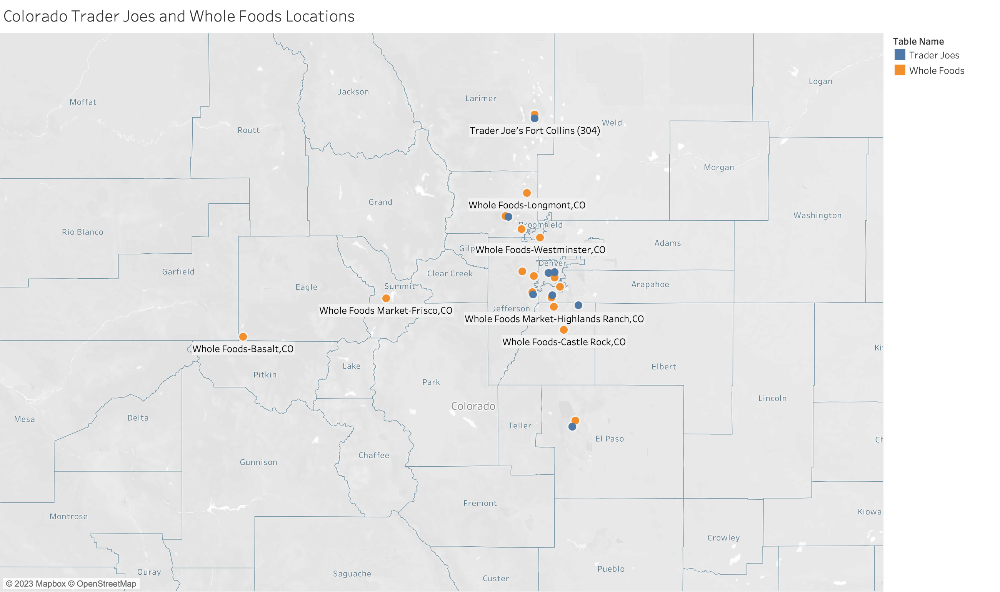
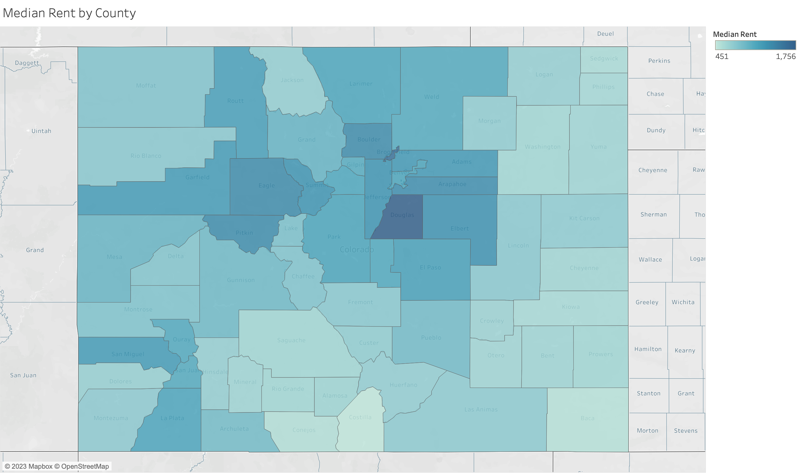

# Set your working directory
setwd("C:/Your/File/Path/Here")
getwd()
# Load libraries using pacman
# pacman installs and loads the required packages
# install.packages("pacman")
library(pacman)
p_load(dplyr,readr,tidyverse,ggplot2,modelsummary,GGally,factoextra,pandoc)Week 10 Lab: Visualizing and Exploring Cross-Sectional Data in Tableau

This Lab Contributes to Course Objectives: 1, 3, 4, 5, 7, 8
Learning Objectives: R
Practice joining and cleaning cross-sectional datasets
Create store-level summaries
Visualize and explore store attributes
Log-transform and scale variables
Apply k-means clustering and interpret results
Learning Objectives: Tableau
Understand Tableau geocoding capabilities
Explain the different use cases of symbol and filled maps
Create symbol and filled maps
Customize Tableau maps
Aggregate individual-level data by geographic region
Download Lab Handout Here
Part 1: R
We’ll use store-level data to group similar stores into clusters using k-means clustering. This process will help us segment stores based on customer behavior and sales performance.
Step 1: Set Working Directory and Load Packages
Step 2: Read in and Inspect the Data
shopper_info <- read_csv("https://csu-arec-330.github.io/materials/unit_02/inputs/shopper_info.csv")
shopper_zip <- read_csv("https://csu-arec-330.github.io/materials/unit_02/inputs/shopper_zip.csv")
gtin <- read_csv("https://csu-arec-330.github.io/materials/unit_02/inputs/gtin.csv")
store_info <- read_csv("https://csu-arec-330.github.io/materials/unit_02/inputs/store_info.csv")
head(shopper_info)
head(gtin)
head(store_info)
Check Your Understanding
How many rows and columns are in each dataset?
What are the variables that link each table together? Go back to Lab 09 to review the data dictionary.
Step 3: Join the Data
My unit of analysis is at the store-level, so I start with store_info.
store_shopper_left <- left_join(store_info, shopper_info, by = "store_id")
store_shopper_gtin_left <- left_join(store_shopper_left, gtin, by = "gtin")
# How many observations do we have after each join?
nrow(store_shopper_left)
nrow(store_shopper_gtin_left)
length(unique(store_shopper_gtin_left$store_id))
Challenge Question
Why do we use
left_join()here instead ofinner_join()?What does it mean if a store has no matching transactions?
Step 4: Clean the Data
clean_data <- store_shopper_gtin_left %>%
filter(unit_price > 0) %>%
filter(!is.na(shopper_id)) %>%
mutate(total = unit_price * unit_quantity) %>%
arrange(store_id, zip_code)
length(unique(clean_data$store_id))
Why This Matters
We remove negative or zero prices (likely errors), and keep fuel purchases (gtin = NA and gtin = 0) because they tell us something about store type.
Step 5: Create Store-Level Summary
store_summary <- clean_data %>%
group_by(store_id) %>% # Group the data by store
summarise(
total_sales = sum(unit_price * unit_quantity, na.rm = TRUE), # Total sales across all transactions
unique_customers = n_distinct(shopper_id), # Number of unique shoppers
product_diversity = n_distinct(gtin), # Number of unique products sold
fuel_transactions = sum(is.na(gtin) | gtin == 0), # Count of fuel transactions (gtin is NA or 0)
total_transactions = n_distinct(transaction_set_id), # Total number of transactions (visits)
fuel_share = fuel_transactions / total_transactions, # Share of transactions that are fuel-only
.groups = "drop" # Drop grouping structure from output
) %>%
left_join(store_info %>% select(store_id, chain_size), by = "store_id") %>% # Add chain size from store_info
filter(!is.na(chain_size)) # Keep only rows with valid chain_size (required for clustering later)
# Merge store summary with the full store_info (excluding duplicate chain_size column)
final_dataset <- store_summary %>%
left_join(store_info %>% select(-chain_size), by = "store_id") %>%
arrange(store_id, zip_code) # Arrange for easier viewing
View(final_dataset) # Inspect the final dataset of store-level characteristics
Check Your Understanding
What does
fuel_sharetell us about store specialization?How many stores do we have in the final dataset?
Step 6: Generate Summary Statistics
datasummary_skim(final_dataset, type = "numeric")
datasummary_skim(final_dataset, type = "categorical")
datasummary(unique_customers + total_sales + product_diversity + fuel_share + chain_size ~ Mean + SD + Min + Max,
data=final_dataset,
output = "sumstats.docx")Step 7: Visualize Relationships
final_dataset %>%
select(unique_customers, total_sales, product_diversity, fuel_share, chain_size) %>%
ggpairs()
Why This Matters
The ggpairs plot shows skewed distributions and correlations. Skewed data can distort clustering results, so we’ll log-transform
Step 8: Log-Transform Skewed Variables
final_dataset <- final_dataset %>%
mutate(
log_customers = log(unique_customers + 1),
log_sales = log(total_sales + 1),
log_products = log(product_diversity + 1),
log_chain_size = log(chain_size + 1)
)
# Re-check with ggpairs
final_dataset %>%
select(log_customers, log_sales, log_products, fuel_share, log_chain_size) %>%
ggpairs()Step 9: Cluster Analysis
1. Scale the Data
# Check for NAs Before Scaling
final_dataset %>%
select(log_customers, log_sales, log_products, fuel_share, log_chain_size) %>%
summarise(across(everything(), ~ sum(is.na(.))))
# Scale the Data
cluster_data <- final_dataset %>%
select(log_customers, log_sales, log_products, fuel_share, log_chain_size) %>%
drop_na()
cluster_scaled <- scale(cluster_data)2. Determine the Optimal Number of Clusters
# Use Elbow and Silhouette Methods to determine optimal number of clusters
fviz_nbclust(cluster_scaled, kmeans, method = "silhouette")
fviz_nbclust(cluster_scaled, kmeans, method = "wss")
Challenge Question
What number of clusters seems most appropriate based on the plots? Why?
3. Run K-Means
set.seed(123)
kmeans_fit <- kmeans(cluster_scaled, centers = 4, nstart = 25)
final_clusters <- final_dataset %>%
mutate(cluster = kmeans_fit$cluster)4. Compare Cluster Averages
# Use the original (non-logged) variables because you're summarizing actual store characteristics — not the transformed versions.
final_clusters %>%
group_by(cluster) %>%
summarize(across(c(unique_customers, total_sales, product_diversity, fuel_share, chain_size), mean))
View(final_clusters)
Why This Matters
log_sales, log_customers, etc., were only used to improve the clustering algorithm (by reducing skew and balancing scales). But once the clustering is done, you want to describe the real characteristics of each cluster in interpretable units.
Step 10: What Do Your Clusters Reveal?
most_frequent_purchase <- store_info %>%
left_join(final_clusters %>% select(store_id, cluster), by = "store_id") %>%
filter(!is.na(cluster)) %>%
left_join(shopper_info, by = "store_id") %>%
left_join(gtin, by = "gtin") %>%
group_by(cluster, gtin, subcategory) %>%
filter(!is.na(subcategory)) %>%
summarize(purchase_count = n(), .groups = "drop") %>%
group_by(cluster) %>%
filter(purchase_count == max(purchase_count)) %>%
ungroup() %>%
select(-gtin)
View(most_frequent_purchase)
# Join most_frequent_purchase with final_clusters and then write to csv
final_clusters_out <- final_clusters %>%
left_join(most_frequent_purchase, by = "cluster")
write_csv(final_clusters_out, "final_clusters_out.csv")
Check Your Understanding
What is the most common product category in each cluster?
How might this help a convenience store manager?
Lab Script for Week 10: Visualizing and Exploring Cross-Sectional Data in Tableau
# This is the script for Lab Week 10
setwd("C:/Users/lachenar/OneDrive - Colostate/Documents/GitProjectsWithR/csu-arec-330.github.io/materials/unit_02/week_02")
getwd() # Confirm I am working in the proper directory.
# Load required libraries using pacman for convenience
# pacman will check if the package is installed, install it if not, and then load it for use
#install.packages("pacman")
library(pacman)
p_load(dplyr,readr,tidyverse,ggplot2,modelsummary,GGally,factoextra,pandoc)
# =======================================================
# READ IN DATA
# =======================================================
# Read in the shopper_info dataset
# This dataset contains detailed information on shoppers and their transactions for July 2023
shopper_info <- read_csv("https://csu-arec-330.github.io/materials/unit_02/inputs/shopper_info.csv")
# Separate data file with shopper ID and their zipcode
shopper_zip <- read_csv("https://csu-arec-330.github.io/materials/unit_02/inputs/shopper_zip.csv")
# Read in the GTIN dataset
# This file links products to their Global Trade Item Numbers, akin to SKUs or UPCs
gtin <- read_csv("https://csu-arec-330.github.io/materials/unit_02/inputs/gtin.csv")
# Read in the store_info dataset
# Contains details about each store, linkable to shopper_info via store_id
store_info <- read_csv("https://csu-arec-330.github.io/materials/unit_02/inputs/store_info.csv")
head(shopper_info)
head(gtin)
head(store_info)
# =======================================================
# STORE SEGMENTATION
# =======================================================
store_shopper_left <- left_join(store_info, shopper_info, by = "store_id")
total_observations <- nrow(store_shopper_left)
print(total_observations)
store_shopper_gtin_left <- left_join(store_shopper_left, gtin, by = "gtin")
total_observations <- nrow(store_shopper_gtin_left)
print(total_observations)
length(unique(store_shopper_gtin_left$store_id))
# =======================================================
# CLEAN DATA
# =======================================================
# Clean and transform the raw data
clean_data <- store_shopper_gtin_left %>%
# Remove observations with negative or zero unit price (e.g., returns or invalid entries)
filter(unit_price > 0) %>%
# Remove observations of stores missing shopper IDs
filter(!is.na(shopper_id)) %>%
# Calculate total spending per line item
mutate(total = unit_price * unit_quantity) %>%
# Convert transaction_set_id and transaction_item_id to integers without decimals
mutate(transaction_set_id = format(transaction_set_id, scientific = FALSE, trim = TRUE), transaction_item_id = format(transaction_item_id, scientific = FALSE, trim = TRUE)) %>%
# Arrange data by store_id and zip_code
arrange(store_id, zip_code)
# Check how many distinct shoppers are in the clean dataset
length(unique(clean_data$store_id))
# Summarize metrics at the store level
store_summary <- clean_data %>%
group_by(store_id) %>%
summarise(
total_sales = sum(unit_price * unit_quantity, na.rm = TRUE), # Total revenue
unique_customers = n_distinct(shopper_id), # Number of unique customers
product_diversity = n_distinct(gtin), # Number of unique products sold
fuel_transactions = sum(is.na(gtin) | gtin == 0), # Number of fuel transactions
total_transactions = n_distinct(transaction_set_id), # Total number of transactions
fuel_share = fuel_transactions / total_transactions, # Fuel share of transactions
.groups = "drop"
) %>%
left_join(store_info %>% select(store_id, chain_size), by = "store_id") %>% # Add chain size
filter(!is.na(chain_size))
# Final dataset: merge summaries if desired
final_dataset <- store_summary %>%
left_join(store_info %>% select(-chain_size), by = c("store_id")) %>%
arrange(store_id, zip_code)
View(final_dataset)
# =======================================================
# SUMMARY STATISTICS
# =======================================================
# Using our dataframe 'final_dataset'
datasummary_skim(final_dataset, type = "numeric")
datasummary_skim(final_dataset, type = "categorical")
datasummary(unique_customers + total_sales + product_diversity + fuel_share + chain_size ~ Mean + SD + Min + Max,
data=final_dataset,
output = "sumstats.docx")
# =======================================================
# GGPLOT
# =======================================================
# Example: choose numeric variables relevant to your research question
final_dataset %>%
select(unique_customers, total_sales, product_diversity, fuel_share, chain_size) %>%
ggpairs()
ggsave("includes/ggpairs_store_segment_levels.png")
# I noticed that the distribution of my store attributes is very skewed, so I want to rescale them.
final_dataset <- final_dataset %>%
mutate(
log_customers = log(unique_customers + 1),
log_sales = log(total_sales + 1),
log_products = log(product_diversity + 1),
log_chain_size = log(chain_size + 1)
)
# Run the ggpairs() command again
final_dataset %>%
select(log_customers, log_sales, log_products, fuel_share, log_chain_size) %>%
ggpairs()
ggsave("includes/ggpairs_store_segment.png")
# =======================================================
# CLUSTER ANALYSIS
# =======================================================
# Check for NAs in your log-transformed variables
final_dataset %>%
select(log_customers, log_sales, log_products, fuel_share, chain_size) %>%
summarise(across(everything(), ~ sum(is.na(.))))
cluster_data <- final_dataset %>%
select(log_customers, log_sales, log_products, fuel_share, log_chain_size)
cluster_scaled <- scale(cluster_data)
# Silhouette method
fviz_nbclust(cluster_scaled, kmeans, method = "silhouette")
# Elbow method
fviz_nbclust(cluster_scaled, kmeans, method = "wss")
# K-means clustering
set.seed(123)
kmeans_fit <- kmeans(cluster_scaled, centers = 4, nstart = 25)
final_clusters <- final_dataset %>%
mutate(cluster = kmeans_fit$cluster)
final_clusters %>%
group_by(cluster) %>%
summarize(across(c(unique_customers, total_sales, product_diversity, fuel_share, chain_size), mean))
View(final_clusters)
# =======================================================
# WHAT DO YOUR CLUSTERS REVEAL?
# =======================================================
# Join cluster labels to store_info (keeping only cluster info)
most_frequent_purchase <- store_info %>%
# Join cluster info only
left_join(final_clusters %>% select(store_id, cluster),
by = c("store_id")) %>%
# Filter out rows with missing cluster
filter(!is.na(cluster)) %>%
# Join in shopper info
left_join(shopper_info, by = "store_id") %>%
# Join in produt info
left_join(gtin, by = "gtin") %>%
# Count purchases by cluster and subcategory
group_by(cluster, gtin, subcategory) %>%
filter(!is.na(subcategory)) %>%
summarize(purchase_count = n(), .groups = "drop") %>%
# Get the top subcategory in each cluster
group_by(cluster) %>%
filter(purchase_count == max(purchase_count)) %>%
ungroup() %>%
select(-gtin)
View(most_frequent_purchase)
# Join most_frequent_purchase with final_clusters and then write to csv
final_clusters_out <- final_clusters %>%
left_join(most_frequent_purchase, by = "cluster")
write_csv(final_clusters_out, "final_clusters_out.csv")Part 2: Tableau
The defining characteristic of cross-sectional data is that we observe values of variables at a single point in, or cross-section of, time. Often, but not always, cross-sectional data have geographic components that allows us to use Tableau’s mapping features when creating visualizations.
Effective analysis of cross-sectional data begins with estimating and conveying useful summary statistics. Today, we will spend most of our time discussing how to do this with spatial data.
If you want to analyze your data geographically, you can plot your data on a map in Tableau.
When building map views, Tableau supports any latitude and longitude coordinates, as long as they are in decimal degrees. Tableau can also recognize and geocode the following geographic information types:
Airport Codes
Cities
Countries
Regions
Territories
States
Provinces
Postcodes
Core Based Statistical Areas (CBSAs)
Metropolitan Statistical Areas (MSAs)
U.S. Area Codes
Congressional Districts
Zip Codes
If you have geographic delineations besides these, you will have to use crosswalks or some other means to convert the delineations to one of these forms, or to generate latitudes and longitudes for specific points (e.g., addresses).
Tableau can also connect to the following spatial file types:
Shapefiles
KML files
GeoJSON files
TopoJSON files
Esri File Geodatabases
These types of files include detailed geographic information that enables us to plot shapes and single points.
Symbol vs. Filled Maps
A symbol map visualizes quantitative data across geographic locations and is particularly effective for displaying variations or patterns across different areas. This type of map can highlight individual store locations, distribution points, or any geographical data point associated with numeric values.
 You might want to highlight which stores have higher spending like this example.
Data Requirements for Symbol Maps
To create a symbol map in Tableau, your data source must include:
Quantitative Values: Numeric data that you want to visualize (e.g., sales volume, customer count). These values will determine the size or color of the symbols on the map.
Geographic Information: Latitude and longitude coordinates are preferred for precision. However, Tableau can also recognize and plot data using geographic locations (e.g., city names, postal codes, country names) provided they are correctly formatted.
Steps to Create a Symbol Map in Tableau
- Connect your data.
- Start Tableau and connect to your data source.
- Prepare your data.
- Make sure your geographic fields (e.g., latitude and longitude) are recognized by Tableau.
- If necessary, you might need to set the geographic role of your fields by right-clicking the field name in the Data pane and selecting “Geographic Role.”
- Create the map.
- Drag your geographic field to the Rows or Columns shelf. Tableau automatically creates a map view.
- If using latitude and longitude, drag them to the respective shelves.
- Add your data layer.
- Drag the field representing your quantitative values to the “Size” mark or “Color” mark in the Marks card. Adjust the size and color to reflect the data accurately.
- Customize your map.
- Use the “Map” menu to adjust the map’s background, borders, and labels for better readability and impact.
- Consider adding filters or additional layers for interactivity and showing additional details.
Tips for Effective Symbol Maps
Variation in Values: Symbol maps are most impactful when there’s significant variation in the quantitative values being represented. If your data points have similar values, consider using color gradients instead of size to represent the data, as slight differences in color can be more discernible.
Symbol Size and Overlap: Adjust the size of your symbols to ensure they are visible and do not overlap excessively, especially in areas with many data points. Tableau allows you to scale the size of symbols based on the view or to set fixed sizes.
Annotations and Tooltips: Enhance your map with annotations to highlight key locations or trends. Customize tooltips to provide additional information about each symbol when hovered over.
Legends and Labels: Ensure your map includes a clear legend for size and color indicators. Use labels sparingly to maintain map clarity, focusing on major points of interest.
Filled maps, also known as choropleth maps, are powerful visual tools for displaying how quantitative or qualitative values vary across geographic regions. They color-code regions (such as countries, states, or counties) based on the data values they represent, making it easy to see relative differences in data distribution spatially. For instance, to analyze and compare rental rates across Colorado counties, a filled map provides a clear visual representation of spatial comparisons.

Data Requirements for Filled Maps
To create an effective filled map in Tableau, your data source must include:
Quantitative or Qualitative Values: These values determine the color intensity of each geographic region on the map. Quantitative data could be numerical values like population size or average income, while qualitative data could include categorical values that are ranked or ordered.
Geographic Locations: The data must contain geographic location information that Tableau recognizes (e.g., country names, state names, postal codes). For more specific or customized geographic areas, such as electoral districts, you may need custom polygons provided by spatial data files (e.g., Shapefiles).
Steps to Create a Filled Map in Tableau
- Connect your data.
- Start Tableau and connect to your data source.
- Prepare your data.
- Make sure the geographic location fields in your dataset are correctly identified by Tableau.
- You may need to set or verify the geographic role for these fields in the Data pane.
- Drag and drop to create the map.
- Double-click on the geographic field in your data pane.
- Tableau automatically creates a map based on the location data.
- Encode data with color.
- Drag the field representing the values you wish to visualize onto the “Color” mark on the Marks card.
- Tableau will apply a color scheme to the map regions based on these values.
- Adjust the color palette.
- Customize the color palette to enhance readability and effectively communicate the data story.
- Use different color schemes for qualitative data and sequential schemes for quantitative data.
- Refine and Customize: Use the “Map” options to adjust map features, such as borders and labels. Add legends, annotations, and tooltips to make your map more informative and interactive.
Tips for Effective Filled Maps
Choose the Right Data: Filled maps are best suited for data that varies across defined geographic regions. Ensure your data is appropriate for this type of visualization, focusing on regional differences or patterns.
Simplify for Clarity: Avoid overloading your map with too much data or too many categories. If your map becomes too cluttered, consider simplifying the data or using filters to allow viewers to focus on specific aspects.
Use Color Wisely: Select color palettes that are easy to read and interpret. Use sequential colors for quantitative data to show a gradient of values, and diverging colors for data with a critical midpoint.
Highlight Important Data: Use annotations or focused color highlights to draw attention to significant areas or patterns you want to emphasize, such as regions with exceptionally high or low values.
Consider Geographic Scale: The chosen geographic scale can impact the interpretation of your data. Be mindful of how zoom level and regional boundaries influence the perception of data distribution and density.
Knowledge Checks
Knowledge Check 1: Suppose we have gas station-level data on gas prices yesterday. What type of map would you use to show this information?
For gas station-level data on gas prices yesterday, a symbol map would be more appropriate. It would let you place symbols at each gas station’s location, with symbol sizes or colors representing the price of gas, providing detailed location-specific price information.
Knowledge Check 2: Suppose we have county-level data on average gas prices last year. What type of map would you use to show this information?
For county-level data on average gas prices last year, a filled map would be the most suitable choice. It would allow you to color-code each county based on the average gas price, showing spatial variations across the region.
Geocoding Application
You Do It: Create a New Symbol Map
- Connect to
final_clusters_out.csv.
- Start Tableau and connect to the dataset.
- Prepare the data.
- Check that
LongitudeandLatitudeare recognized by Tableau as geographic fields. - If not, set their geographic roles appropriately by right-clicking each field in the Data pane and selecting Geographic Role > Longitude or Latitude.
- Drag Longitude and Latitude into the Columns and Rows shelf.
- Move the
Longitudefield to the Columns Shelf and theLatitudefield to the Rows Shelf to initiate the creation of a map. - Make sure to switch the
LongitudeandLatitudefields to Dimensions, or you will get a single point for all locations. - If Tableau does not automatically recognize them as geographic fields, go back to Step 2. You might need to change their data type to dimensions.
- Visualize store types.
- Drag the
Store Chain Namefield onto the Color card. This action will color-code the map symbols according to the type of chain store, allowing you to quickly see which category is most prevalent across the dataset.
Which type of store brands appear to be the most prevalent?
- Analyze visitor counts.
- Drag the
Unique Customersfield onto the Size card. This will adjust the size of each symbol on the map based on the number of unique shoppers, making it easy to identify which stores attract the most visitors.
Which type of store appears to have the most visitors?
What if we change the aggregation of
Unique Customersto AVG instead of SUM?
- Add information to the Tooltips.
- For more detailed information about each store, add the
Store Nameto the Tooltip card. Then, when you hover over any symbol on the map, you can see the store’s name along with other data you’ve chosen to include.
::: {.callout-note title=“Other Options for Creating Symbol Maps} 1. Follow the initial steps to set up another symbol map. This time, experiment with different attributes for colors, size, and tooltips. For instance, you might choose to visualize the Product Diversity using the size of the symbols, or the Chain Size as the color.
Instead of using precise longitude and latitude, try creating a map based on
Cityand associate it withUnique Customersby draggingCityto the Columns Shelf andUnique Customersto the Rows Shelf. Use the Show Me menu to select Symbol Map. This visualization will provide a more aggregated view, showing visitor counts per city.Modify the aggregation of
Unique Customersfrom SUM to AVG by right-clicking on the field in the Marks card and choosing Measure(Sum) > Average. This adjustment shows the average number of visits per store within each city or map symbol, offering insights into typical store performance rather than total visits. :::
You Do It: Create a Filled Map
Filled maps provide a powerful way to visualize data that varies across geographic regions, using color to represent the intensity or magnitude of a variable within predefined areas like postal codes, counties, or countries. Let’s apply this to our data.
Create a new worksheet.
Select the
Zip Codeand move it to the Columns Shelf, andUnique Customersand move it to the Rows Shelf. (Make sureZip Codeis set as a Geographic Role.)Navigate to the Show Me Menu.
- You should have the option to select either a symbol map (left) or a filled map (right). Choose the filled map.
- Analyze the visualization.
This map colors each postal code area based on the
Unique Customers, showing only zip codes where stores have shoppers.While filled maps are excellent for visualizing one main attribute per geographic area, layering multiple store attributes directly on the map might be challenging.
- Add more data.
To provide context on the diversity of products sold at stores within each postal code, drag the
Product Diversityfield into the Tooltip editor.Alternatively: Open the Tooltip. Use the Insert button in the editor, selecting SUM(Product Diversity) or type in the field name surrounded by
< >, like<Product Diversity>.
Does the symbol map or filled map provide a clearer understanding of the data?
Symbol vs. Filled Maps
Filled maps are great for showing density or intensity over areas, while symbol maps are better for exact locations and attributes of individual points.
You Do It: Combine Symbol and Filled Maps
Create a new worksheet.
Show unique customers by postal code using a filled map.
Copy Latitude measure. Command-click (Mac) or Control-click (Windows) the
Latitudemeasure on the Rows shelf and drag it to the right to duplicate it.For the second map pane, remove the
Postal Codefield. Then, drag both theLatitudeandLongitudefields to the Details card on the Marks card. Change them to Dimensions.Add
Store Chain Nameto the Color card to differentiate store types andProduct Diversity(or choose something else that you think works) to the Size card to represent differences across product mix.Enable Dual Axes. Right-click the second
Latitudefield on the Rows shelf and choose Dual Axis.Apply any additional custom formatting to your map as desired.
Interpretation: This combined map offers a comprehensive view of customer behavior, highlighting areas with high visit counts and distinguishing stores by chain and product mix. It allows for spatial analysis of store popularity and accessibility, providing valuable insights into consumer preferences and mobility patterns.
On Your Own: Plotting Results from a Cluster Analysis
If you want to show results from your cluster analysis in Tableau, a simple way is to associate each cluster with a specific color. Let’s do this now.
Connect to the dataset with the results from the store-level cluster analysis (
final_clusters_out.csv).Move
Longitudeto the Columns shelf andLatitudeto the Rows shelf.
- Recall you will need to change the
LatitudeandLongitudefields to Dimensions for this to display correctly.
- Move
Clusterto the Colors card to be associated with a color.
- Change
Clusterto a Discrete (rather than Continuous) measure so the colors are distinct.
- Add some more detail to the Tooltip. I would like to know the city name, store chain name, and cluster when I hover over each point on the map.
Extra Feature in Tableau: Customizing Your Map
Tableau offers powerful customization options for maps, including background layers and integrated data sources. Follow these specific steps to enhance your map and explore a combination of symbol and filled map layers.
- Adding Background Layers
Access Background Layers: Right-click on your map and select
Background Layers....Explore Layer Options: Browse through the map layer options and select a combination that enhances the readability and appeal of your map.
- Integrating Data Sources
Select Integrated Data Source: Click the drop-down menu under to
Data Layerand choose one of Tableau’s integrated data sources.Adjust Geographic Level: Change the geographic level at which this information is displayed, tailoring it to the scale of your analysis.
Note: This video uses a different dataset than in our lab, however, it is helpful to see Tableau’s functionality in practice.